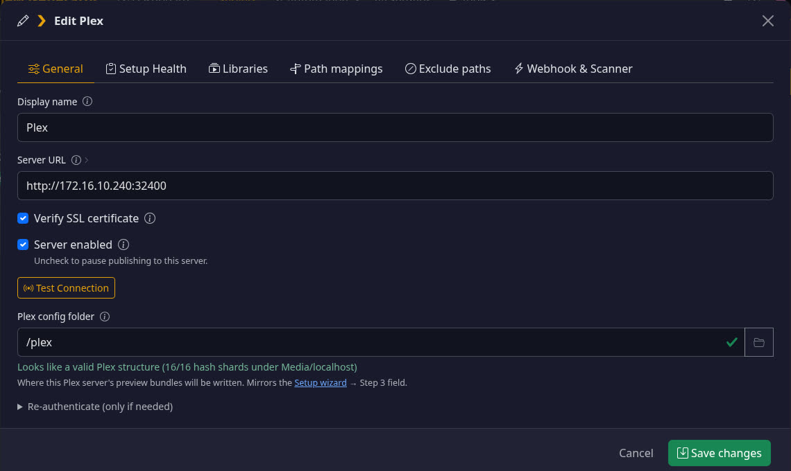
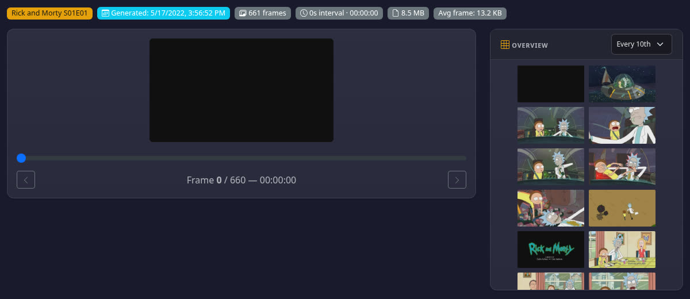
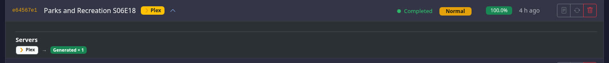

How it works, where the data lives, how one detection is shared across all your servers, what needs a plugin, and what you’ll see in the app. Everything here was tested on lab servers against your real library. Approve it or tell me what to change.
This runs as its own job type next to previews. See how it fits with previews.
Separate jobs, shared plumbing. Intro & Credits gets its own job type with its own queue, schedules, priority, pause and retries. It reuses what previews already have: triggers, server and path matching, the job list and per-server results.
| Situation | What happens |
|---|---|
| New episodes arrive (webhook) | Preview job runs as today. An Intro & Credits job for that season starts a few minutes later (so a whole season’s batch lands in one job), and gets first call on the online lookup quota. |
| Turning it on for your existing library | “Start job → Intro & Credits” for chosen libraries, or a low-priority schedule. Never touches previews. Progress is saved, so it can pause and resume. Uses leftover online quota; local detection for the rest. |
| Scheduled scans | Separate schedules: e.g. previews nightly, Intro & Credits weekly. Each skips files already done. |
| Previews already existed | Makes no difference: the marker job always samples the end of the file itself (about 10–30 s per file). |
| You fix a marker in the Inspector | No job. Saved, locked, sent to every server immediately. |
Marker work runs on the GPU and CPU workers you already set, so your worker counts cap the total load. Decoding uses that worker’s GPU, like previews. Text finding uses that GPU only if it’s actually faster there, otherwise CPU.
Lower priority than previews by default. Pause a long backfill on its own (a small change: pause is global today). Retry failures on their own.
The preview job engine was just unified (#243). Markers stay out of its internals, so they can’t break previews.
A webhook creates two jobs. The dashboard links them so it still reads as one event.
Checked in this order. Numbers are measured on your library.
| Source | Finds | How good | Cost | Notes |
|---|---|---|---|---|
| Chapters inside the file | Intro, credits, recap | Exact | Free | Streaming releases name chapters “Intro”, “Title Sequence”, “End Credits”. About 1 in 9 seasons. |
| TheIntroDB (online) | Intro, credits, recap | When it has data: intros 35 of 43 right, credits 23 right / 4 wrong. Has data for ~1 in 4 of your TV episodes, ~1 in 100 movies. | 1 web lookup | Works without a key: 500 lookups a day (read from TheIntroDB’s own limit headers). Your own free key raises that. Used without written permission — your decision; keys can be revoked. |
| Matching audio across a season | TV intros | 77% right, 12% missed, 11% wrong | ~2 s per episode | Finds the theme tune episodes share. Works from a season’s second episode. |
| On-screen credit text | Credits (movies and TV) | Within 10 s on 59 of 80 test files; too early once | ~10–30 s per file | Lands on the credit roll, not on epilogue text cards. Phase 3. |
| Markers already on your servers | Second opinion | Not trusted alone | Free | Plex’s South Park S01 intros are ~80 s late on your files. Used only to confirm. |
Random sample from your Plex: 200 TV episodes and 120 movies. Online data is thin for your mix, so local detection does most of the work.
| Source | TV episodes (200) | Movies (120) |
|---|---|---|
| TheIntroDB | 26% (intro 22%, credits 10%) | 1% |
| IntroDB.app | 20% intro · 18% credits | TV only |
| SkipDB | 12% intro · 19% credits | 12% credits |
| Chapters in the file | 10% intro · 14% credits | 21% credits |
| All online sources together | 32% intro · 34% credits | 0% intro · 12% credits |
| Online + chapters | 34% intro · 41% credits | 29% credits |
Searched far and wide for more: only four other live sources exist (Crunchyroll skip data, IntroHater, Open Anime Timestamps, SkipMe.db) — mostly anime or locked down. Nothing anywhere covers sports, talk, reality or most Asian dramas. Your Sports library should be excluded.
One new database file in the app’s config folder: /config/markers.db. Nothing is ever written into your media folders.
| What | Holds | Why |
|---|---|---|
| Files | Path, size, modified time, length, season folder | Identifies the exact file. If size or modified time changes (upgrade, replace), markers are redone. |
| Fingerprints | Audio fingerprint of each episode’s opening | A new episode only processes itself and compares against the stored ones. |
| Evidence | What each source said, with times | Shown in the Inspector so you can see why a decision was made. |
| Markers | The final intro and credits times per file, who decided, locked or not | The single source of truth. Servers are copies of this. |
| Server status | Per file per server: item id, what we sent, when it was checked, result | Skips servers already up to date; spots servers that lost markers. |
Each server also holds a copy the way it natively needs: Plex in its own database, Jellyfin and Emby inside our plugin’s data folder (so the plugin can restore them on its own).
None of the three servers has an API to add intro/credits markers. Checked online, in their API specs, and tested live.
| Server | Plugin? | How we write | What can undo it | Viewers need |
|---|---|---|---|---|
| Plex | No plugin (none possible) | Into Plex’s database (both places Plex keeps markers). Same Plex folder the app already uses for previews. Opt-in with a warning; Plex Pass servers only. | Plex forced re-detection (e.g. “Analyze” on an item). We notice and re-apply. Scans and refreshes don’t touch it. | Plex Pass (or Plex Home) |
| Jellyfin | Yes · existing | Media Preview Bridge gets a markers endpoint. Built for Jellyfin 10.11 and 12.0. One-click update from the app. | Only replacing the file (then we redo it). Survives scans, full refreshes, restarts. | Nothing |
| Emby | Yes · new | New “Media Preview Bridge for Emby”. Built for Emby 4.9 and 4.10. One-click install once Emby accepts it in their catalog; manual install until then. | “Replace all metadata” refresh wipes markers — the plugin puts them back instantly. | Nothing (no Premiere needed) |
Plex: intro, credits. Jellyfin: intro, credits, recap, preview. Emby: intro start/end and credits start only (no “credits end”).
Skip Intro button appeared in the Jellyfin and Emby web players. Plex serves our markers identically to its own (still to check in a real Plex app).
Plex removed its plugin system years ago, so a Plex plugin isn’t an option. We looked for any other door before settling on the database. The old PR #241 design also used a database write.
| Route | Result | How we know |
|---|---|---|
| Plex API “create marker” | Bookmarks only | Tested every type: 400. Edit/delete: 404. Converting a bookmark: ignored. |
| Hidden routes in Plex itself | None | Plex’s server program contains only the two bookmark routes. Plex Web’s code only reads markers. |
| Custom metadata provider (new in Plex) | Can’t carry markers | Official spec has no marker fields. |
| Redirect Plex’s cloud credits lookup | Didn’t work | Hidden setting found in Plex; tested in the lab — Plex ignored it. Would only ever cover credits. |
| Chapter names in files | Ignored by Plex | Plex staff and code; Plex never turns chapters into markers. |
| Plex database | Works | Served instantly, identical to Plex’s own markers. |
The app already needs Plex’s data folder for previews, and the database sits in that same folder. One rule: the app must run on the same machine as Plex. Preview files are fine over a network share, but Plex’s database isn’t — SQLite’s own docs: “all processes using a database must be on the same host… WAL does not work over a network filesystem.” Writing it from another machine can corrupt it, so the app checks and says so. (Your setup is local: fine.)
Plex locks skip intro/credits behind Plex Pass. Tested: with no Pass, Plex hides all markers — even ones already in its database. Viewers also need Pass or to be in your Plex Home.
Plex can stay read-only: Plex’s own markers are used as evidence and sent to Jellyfin and Emby. Plex viewers just keep Plex’s markers.
Size or modified time differs → old markers dropped → detected again → republished everywhere.
Only that episode is fingerprinted; compared with stored siblings. Seconds, not a season rescan.
The periodic check sees the difference and puts them back. Emby’s plugin does this on its own.
It’s locked and pushed to every server. Re-detection shows its answer beside yours but never replaces it.
Before = screenshots of your running app. After = mockups in the app’s own theme, with real timestamps from your library. Per-server switches live in each server’s Edit dialog; shared detection settings live in Settings.
You can have several Plex, Emby and Jellyfin servers; each has its own switch, libraries and status, in the server’s existing Edit dialog. The Servers page itself doesn’t change.

Only how detection works lives here, because a file is detected once and shared by every server. What each server receives is set on that server (next screen).
Why the source list is ordered, not a pipeline diagram: people understand “where does it look, and in what order”; the confidence rule does the rest. The ⓘ copy carries the measured numbers so the trade-offs are visible where the choice is made.
The Preview Inspector gains a tab. It shows what we decided, the evidence behind it, and what each server has right now. The example is real: South Park S01E03, where Plex’s existing intro is 80 seconds late.

Why two zoom windows instead of one full-length bar: an intro is 26 seconds of a 22-minute file, about 2% of the width. Zooming the first and last three minutes makes a 1-second disagreement visible, which is the whole point of the page.
New. Intros are found by comparing a season’s episodes, so the season is the natural unit to review, lock and publish. Real values from Rick and Morty S01; the three “needs review” credits are the episodes where our audio match found no answer.
| Ep | Intro | Credits | Evidence | Plex · Jellyfin · Emby | |
|---|---|---|---|---|---|
| E01 | 2:07 – 2:37 | 21:35 → | Audio 10/10 TheIntroDB | Published | |
| E02 | 0:01 – 0:30 | 20:46 → | Audio 10/10 TheIntroDB | Published | |
| E03 | 0:02 – 0:29 | 20:28 → | Audio 10/10 TheIntroDB | Published | |
| E04 | 0:01 – 0:29 | Needs review | Audio 10/10 | Review | |
| E07 | 1:06 – 1:38 | 20:39 → | Audio 10/10 TheIntroDB | Published | |
| E10 | 0:27 – 0:57 | Needs review | Audio 10/10 | Review | |
| E11 | 1:17 – 1:48 | 21:15 → | Audio 10/10 🔒 Locked by you | Published |
Intro & Credits jobs appear in the same queue, linked under the preview job that triggered them, with the same per-server breakdown.

Turning on the switch in a Plex server’s Edit → Intro & Credits tab asks for a clear yes first, because it means writing to that Plex server’s database. Asked once per Plex server.
| Phase | Delivers | Useful on its own because |
|---|---|---|
| 1 | Markers store · Intro & Credits job type · chapters · TheIntroDB, IntroDB, SkipDB · Plex and Jellyfin publishing · Bridge plugin update · per-server Intro & Credits tab · shared Settings · Inspector tab (view) · job outcomes | Files with chapters or TheIntroDB coverage get correct markers on Plex and Jellyfin. |
| 2 | Season audio matching for TV intros · Emby plugin + catalog submission · Season view · keep-it-right checks · accuracy test set in the repo | Most TV intros covered, on all three servers. |
| 3 | On-screen credit text detection (movies and TV), tuned on a hand-checked set | Credits for files nobody online has covered. |
| 4 | Adjust / lock editor · anime source (AniSkip) · Setup Health checks · helper container for Plex on another machine · docs | Fixing the leftovers by hand. |
Every setting below was measured, not assumed. Test sets: 118 TV episodes whose files have studio intro chapters, and 80 files (40 movies, 40 TV) with credits chapters. Wrong chapters were checked frame by frame and corrected.
| Choice | Useful | Wrong | Missed | Verdict |
|---|---|---|---|---|
| Chromaprint algorithm 1, stereo | 91 of 118 | 13 | 14 | Chosen |
| Algorithm 4, stereo | 87 | 11 | 20 | Fewer finds |
| Algorithm 0, stereo | 86 | 15 | 17 | Worse |
| Front channels only | 80 | 20 | 18 | Worse |
| Algorithm 2 | 48 | 10 | 60 | Much worse |
| Algorithm 3 | Drops leading silence, so every time is shifted | Unusable | ||
| Snap intro end to silence | Made results worse | Not used | ||
With just one other episode from the season: 93 useful, 15 wrong. So a season works from its second episode.
Compared with last season’s episodes instead: 48 of 82 useful, 10 wrong. Good enough as a hint that needs a second source.
About 2 seconds of CPU per episode, saved per file. No GPU version of this exists. At most 2 at a time.
Looks at keyframes from the last 15 minutes of a movie (7.5 minutes for TV). That covers the longest credits found in 205 of your movies (14 minutes). Then it decodes the 20 seconds before its answer to pin down the exact second.
| Frames used | Within 10 s | Too early | Too late | Nothing found |
|---|---|---|---|---|
| Keyframes from the end of the file | 59 of 80 | 1 | 9 | 4 |
| Preview frames every 6 s (your setting) | 58 of 80 | 0 | 9 | 10 |
| Preview frames every 10 s (default) | 43 of 80 | 1 | 9 | 21 |
Late means names over bright footage, fancy backgrounds or tiny text: the viewer just sees a bit more. Too early is the dangerous kind, and that happened once in 80.
By default credit text still needs a second source to agree before a marker is published.
8 to 13 seconds per movie with GPU decoding. Text finding on CPU is 23 ms a frame with 2 threads.
| Step | Uses | Why |
|---|---|---|
| Decoding frames | GPU | Same hardware decoding the app already uses for previews. |
| Finding text | Any GPU, CPU fallback | Runs through Vulkan, so NVIDIA, Intel and AMD all work with one small add-on (+16 MB). Proven on NVIDIA inside the app image: same results as CPU, 13.3 vs 18.7 ms a frame. Intel and AMD still to test. If the GPU isn’t really working, it switches to CPU on its own. |
| Audio fingerprints | CPU | No GPU option exists. About 2 s per episode. |
| Everything | Low priority | One worker by default, capped threads, so your server stays responsive. |
Built on its own branch. Nothing reaches dev until it’s fully tested on real servers.
Jellyfin and Emby plugins are built locally for lab testing on the branch. Their public releases (Jellyfin manifest, Emby catalog submission) happen only when the feature merges.
The test sets from this research (118 TV episodes with studio chapters, 205 movies with credits chapters, 43 verified online cases) run before any detection change is accepted.
This design and its evidence live on the branch and get updated whenever a decision changes, so nothing drifts during the build.